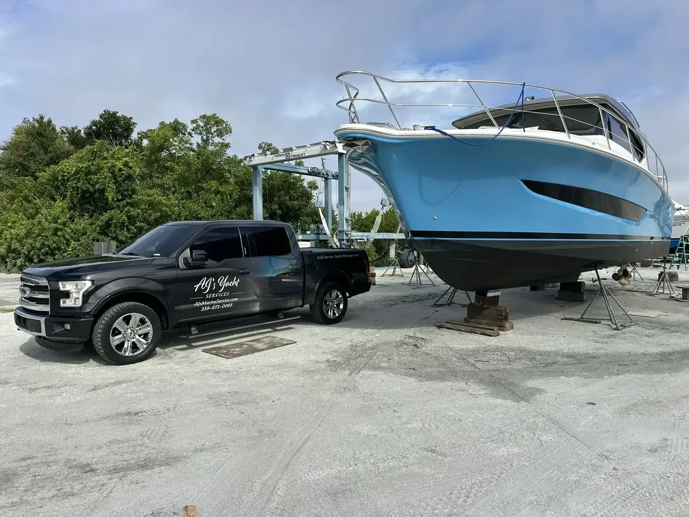
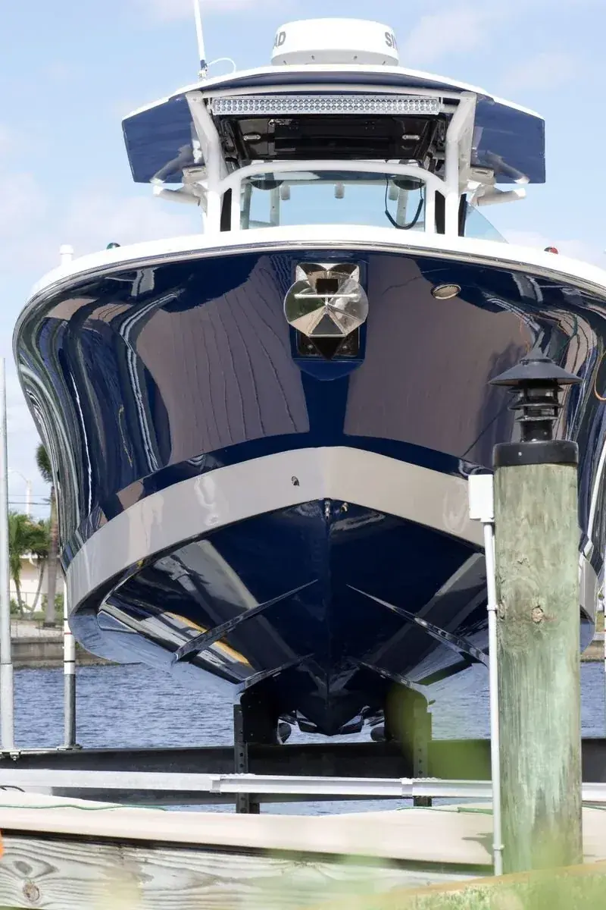
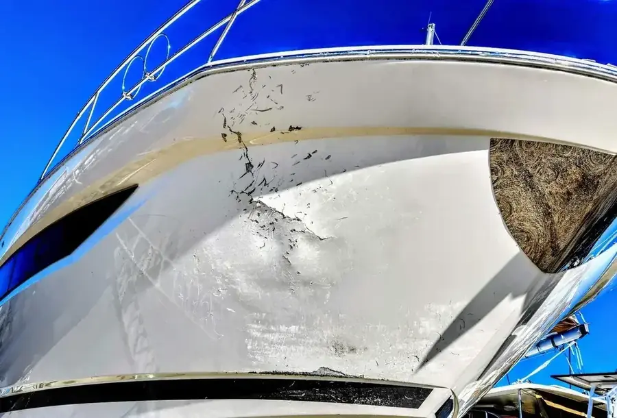
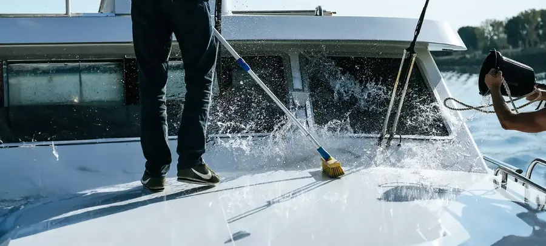
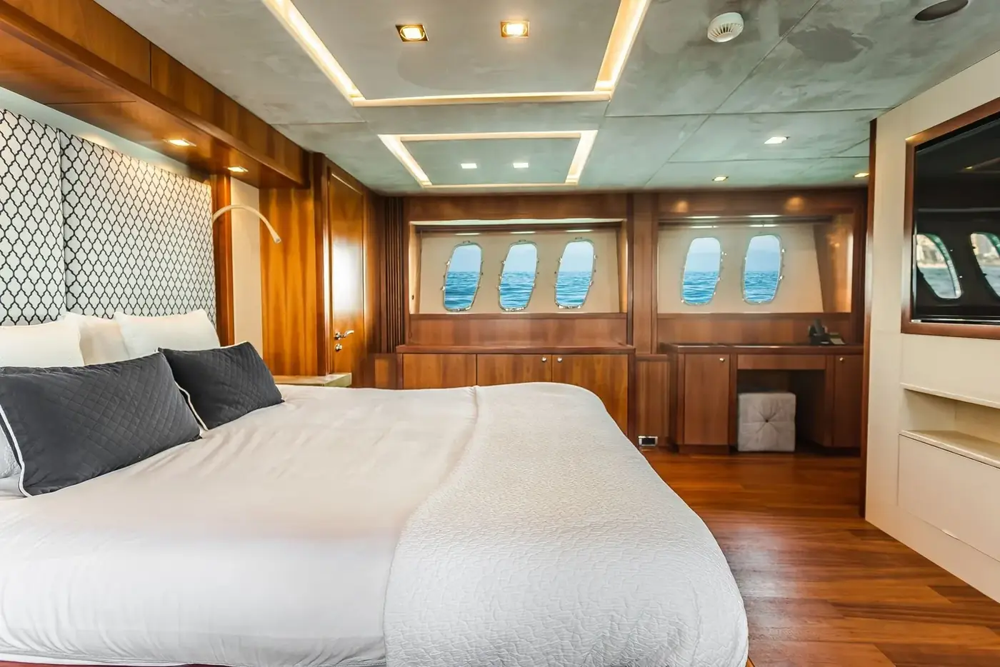
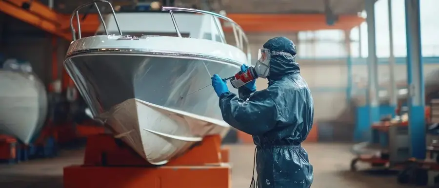
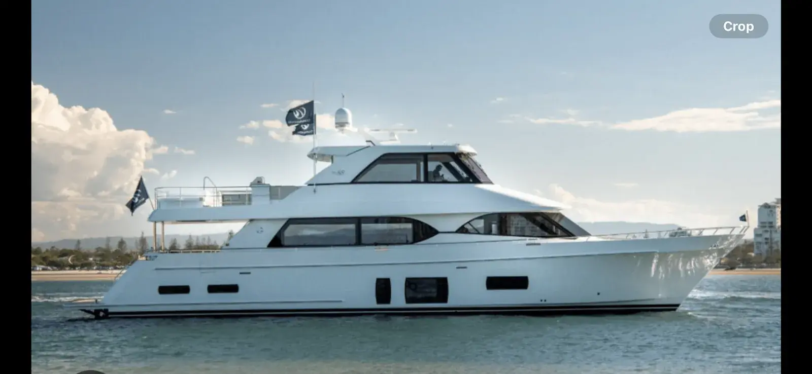
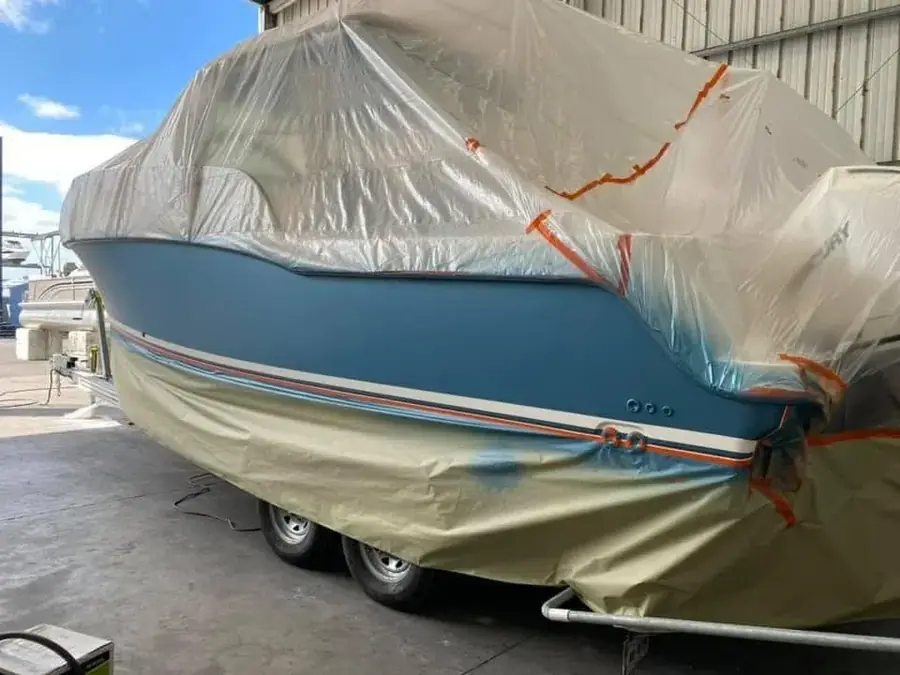
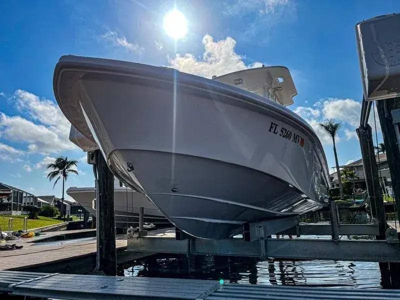

Boat Repair, Restoration & Managed Care
Premium craftsmanship for center consoles, large vessels, and yachts - repaired, restored, and fully managed by one trusted team.
Services

Marine Care Done Right - The First Time.
AJ’s Yacht Service handles premium vessels from center consoles to 250′ yachts. Every project starts with a proper assessment, never a guess, so the work protects your investment and looks like it was never touched.
From insurance claims to ceramic coatings, we handle the full scope so you keep your weekends - and your boat keeps its value.
Read More →Trusted By Owners Across Southwest Florida
Expert Solutions For Every Surface & Structure
From gel coat to full repaints, our specialists restore finish, strength, and value - the right way, the first time.

Gel Coat Mastery
Color-matched surface repair and oxidation removal that blends seamlessly into the original finish.

Fiberglass Repair
Crack, structural, and reinforcement work that brings damaged hulls back to full strength.

Managed Care
Scheduled detailing, inspections, and priority service that keeps your boat in peak condition.

Changing The Standard In Marine Care - With Meticulous Craftsmanship And A Genuine Eye For Detail.
Getting The Reins Back
AJ’s Yacht Service founder Adam Jones on getting his business back on track.
Trusted, Reviewed, Recommended
Join The List Of Happy Owners
Specialist Repair & Finishing Services
Surface, structure, and finish - restored to a standard you can see up close.
Core Services
Each handled in-house by technicians who specialize in premium vessels.
Gel Coat Repair
Surface damage repair, expert color matching & blending, scratch and oxidation removal.
Learn more →
Custom Boat Paint
Paint correction & refinishing, chip and fade repair, full prep & seal.
Learn more →Boat Detailing
Scheduled detailing, ceramic coatings, and preventive protective care.
Learn more →Fiberglass Repair
Crack and structural repair, reinforcement, and finish restoration.
Learn more →A Look At The Craft
A glimpse at vessels we’ve hauled, refinished, and returned to the water.

On The Water
A premium motor yacht back in service after a full refinish.

Protected Between Phases
Shrink-wrapped and protected between project stages, kept safe from the elements.

Structural Repair
Hauled out for crack repair and reinforcement.
Boat Repair Services
Whether a claim is involved or not, the standard never changes.
Boat Repair - With Insurance
- Proper documentation
- Scope alignment
- Claim guidance
We’ve helped clients go from underpaid claims to full repairs done right.
Boat Repair - Without Insurance
- Fiberglass repair
- Gel coat repair
- Full repainting
- Structural damage repair
Not quick fixes - proper repairs that restore value and finish.
Not Sure What Your Boat Needs?
Send a few details and we’ll tell you honestly - assessment first, always.
Everything Your Boat Needs - Done Right
Managed care for vessels from 30′ to 250′ - proactive upkeep, compliance, and one team that handles every detail.
Three Ways We Keep You On The Water
Proactive detailing, protection, and upkeep that keep your vessel in peak condition.
Detailing & Maintenance
- Scheduled detailing
- Routine inspections
- Preventive care
- Priority service access
You enjoy the boat. We handle everything else.
Ceramic & Gel Coat Protection
- Ceramic coating application
- Gel coat sealing & polishing
- Oxidation removal
- UV & salt-water protection
A protected finish holds its shine and its value.
Bottom & Hull Care
- Bottom cleaning
- Barnacle removal
- Running-gear checks
- Haul-out coordination
Regular hull care protects performance and value.
A Seamless Ownership Experience
Proactive, transparent, and tailored to your vessel.
Proactive Upkeep
Regular inspections and preventive maintenance that reduce downtime.
Compliance
Documentation and standards kept ahead of industry requirements.
Transparency
Clear, consistent updates on status, costs, and scheduling.
Bespoke Plans
Care built around how you actually use your boat.
Your Advocate, Not Just a Vendor.
Adam helped a client secure 7.5× more from insurance, ensuring the repair was done right. He’s your advocate for repairs, maintenance, and navigating insurance when needed - keeping your boat in peak condition so you don’t have to chase vendors or worry about losing value.
Let Us Handle The Upkeep
Ask about scheduled maintenance and priority service for your vessel.
What Our Clients Say
Owners across Southwest Florida trust AJYS with their vessels - here’s why.
Getting The Reins Back
AJ’s Yacht Service founder Adam Jones on getting his business back on track.
Vessels We’ve Serviced
Join Our List Of Happy Owners
Let’s talk about your boat and what it needs next.
Get Your Free Boat Assessment Today
Tell us about your vessel and what it needs. We’ll respond with honest guidance and a clear path forward.